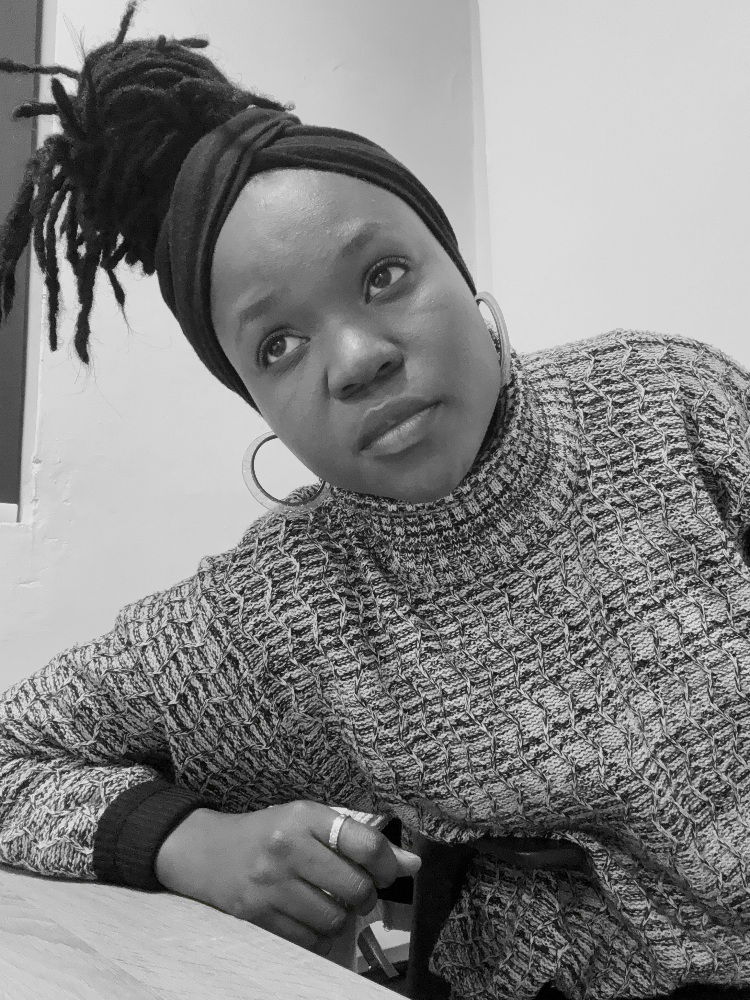

Character introduction · Bio
Janie
Ogeah.

Janie Ogeah · Malta
Curious, aren’t ya? Well, let’s fix that, shall we?
I am a narrative and creative strategist drawn to lies that tell the truth faster than facts ever will.
Full time,I wear the corporate hat of a marketing and communication professional with 10+ years of experience in both the public and private sectors. I studied Mass Communication, then worked with a Nigerian print media outlet as a sub-editor and journalist.
Six months in, I discovered a readership gap. Undergraduates had no place in the newsprint. To bridge it, I launched the column ‘Campus Moments’, written for and by Nigerian undergraduates.
I left the public sector for a few years and joined a digital marketing and PR agency, handling PR and copywriting for clients in oil and gas, sports apparel and fintech. I then joined a global leader in events and exhibitions, where I drove its sustainability communications and stakeholder engagement across Europe, Asia, Africa and the Americas.
The past year saw me return to the public sector, where I now combine my Marcomms experience with MBA expertise to conceive and execute creative strategies that manage and sustain institutional relationships.
Part of my timeis spent telling stories on screen. Black Feeling (2025) is my official debut in narrative film.
I previously followed a passion for writing and producing TV and radio programmes in Nigeria. With my relocation to Malta and the local independent film community as a huge motivator, I moved from commercial productions to narrative shorts, and have so far written four shorts, directed two, and produced three.
Film credits
- The Thing That Came Back 2026 · Writer, director, producer
- Off The Face 2026 · Co-writer, co-producer, actor
- Black Feeling 2025 · Writer, director, producer
- Who Killed the Laughter 2025 · Writer
Core competencies
- Creative leadership
- Strategic brand management
- Digital & traditional marketing
- Campaign strategy
- Data-driven storytelling
- Cross-functional team management
Lies that tell the truth faster than facts ever will.